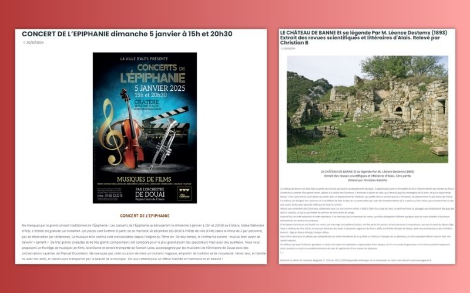
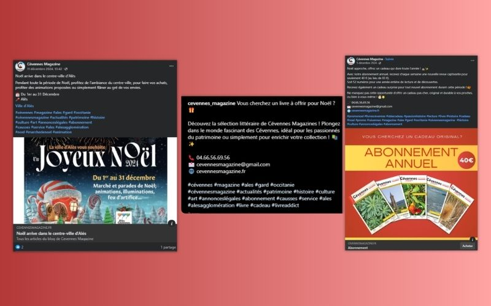
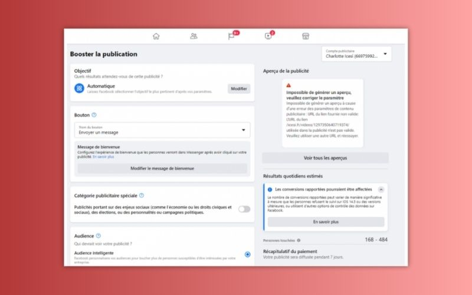
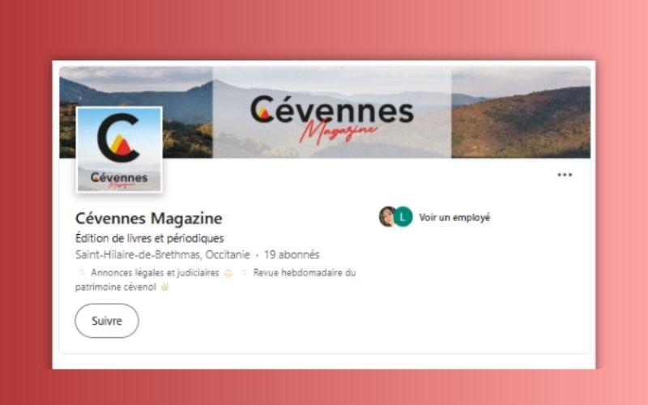
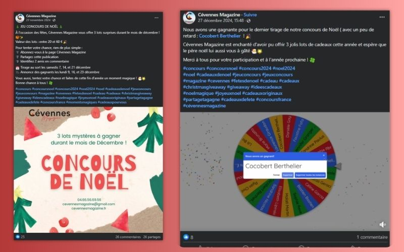
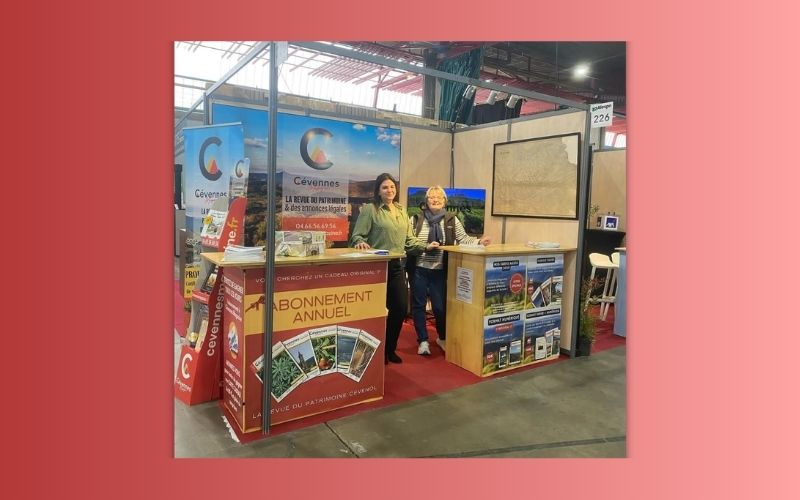
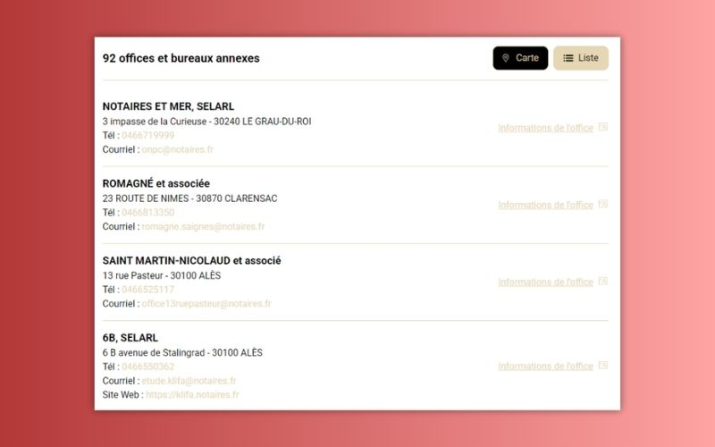
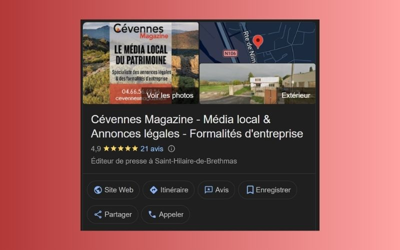

PROJETS PRO
Missions réalisées chez Cévennes Magazine
Création d'articles web
Rédaction, intégration sur CMS et optimisation SEO

Publication Facebook & Instagram
Gestion multi-plateforme via Meta Business Suite

Annonces payantes sur Facebook
Sponsoring publicitaire et ciblage démographique

Mise en place de Linkedin
Création de page entreprise et communication ciblée B2B

Organisation d'un Concours de Noël
Organisation d'un jeu concours, tirage au sort et gestion de la messagerie

Création de visuels promotionnels
Bannières d'abonnement, habillage de stand événementiel et cartes cadeaux

Création de bases de données
Création et qualification de bases de données

Optimisation SEO Local Google
Configuration de la fiche Google et intégration du catalogue produits
